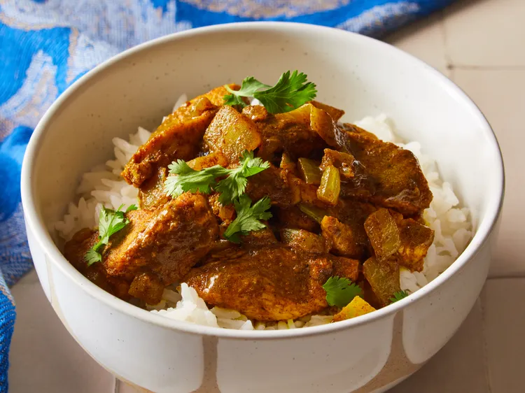

Home
Easy Chicken Curry

Description
- The dish features vibrant flavors with generous curry powder and caramelized onions.
- Allrecipes reviewers appreciate that the meal cooks in one pan with minimal cleanup.
- “So easy and delicious… with only 4 ingredients!” —Allrecipes member StrongRoll6305
Ingredients
- ¼ cup olive oil
- 2 large onions, diced
- ⅓ cup curry powder, or to taste
- 6 skinless, boneless chicken breast halves - cut into strips
Directions (Steps)
- Gather the ingredients.
- Heat oil in a large skillet over medium heat until hot. Add onion and sauté until soft and golden brown, 5 to 8 minutes.
- Slowly stir in curry powder until well blended.
- Add chicken; reduce the heat to low, cover, and cook until chicken is no longer pink in the center and the juices run clear, 20 to 40 minutes. An instant-read thermometer inserted into the center should read at least 165 degrees F (74 degrees C).
- Uncover and cook, stirring constantly to prevent burning, until pan juices reduce to desired amount, 3 to 5 minutes.